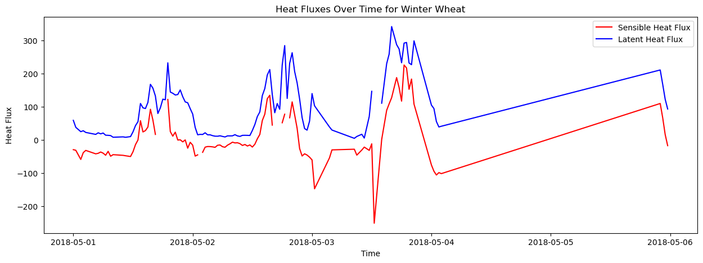
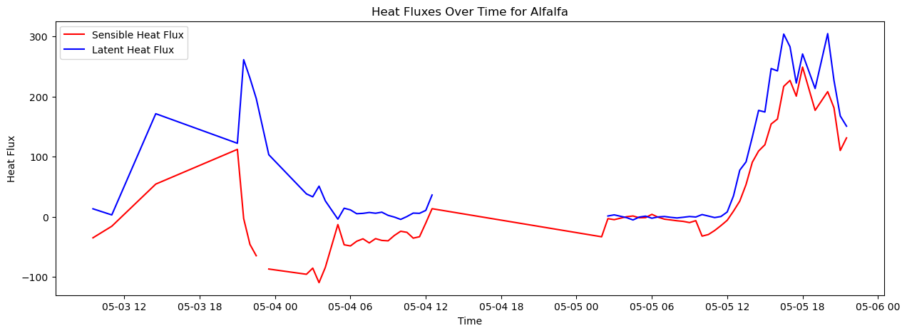
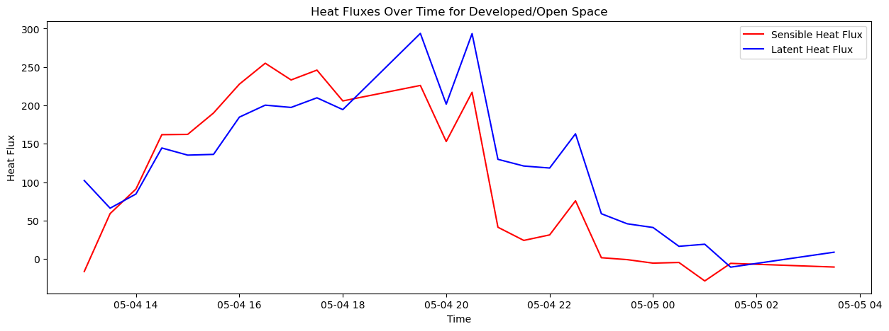
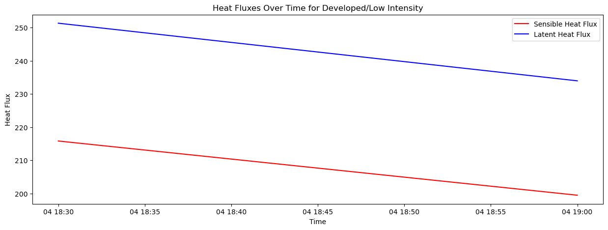
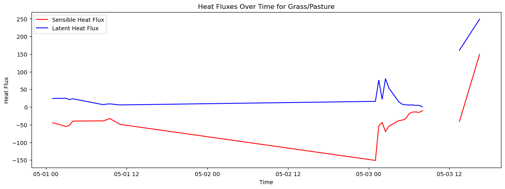

#Import modules
import act
import numpy as np
import xarray as xr
import matplotlib.pyplot as plt
import urllib3
import pandas as pd
#What are the possible crop types?
df = pd.read_csv('cdl_2022_stat_clip_20230609045923_1995493459.csv')
data = np.array(df['Category'])
data
---------------------------------------------------------------------------
FileNotFoundError Traceback (most recent call last)
Cell In[2], line 2
1 #What are the possible crop types?
----> 2 df = pd.read_csv('cdl_2022_stat_clip_20230609045923_1995493459.csv')
3 data = np.array(df['Category'])
4 data
File /usr/share/miniconda3/envs/cookbook-dev/lib/python3.10/site-packages/pandas/io/parsers/readers.py:912, in read_csv(filepath_or_buffer, sep, delimiter, header, names, index_col, usecols, dtype, engine, converters, true_values, false_values, skipinitialspace, skiprows, skipfooter, nrows, na_values, keep_default_na, na_filter, verbose, skip_blank_lines, parse_dates, infer_datetime_format, keep_date_col, date_parser, date_format, dayfirst, cache_dates, iterator, chunksize, compression, thousands, decimal, lineterminator, quotechar, quoting, doublequote, escapechar, comment, encoding, encoding_errors, dialect, on_bad_lines, delim_whitespace, low_memory, memory_map, float_precision, storage_options, dtype_backend)
899 kwds_defaults = _refine_defaults_read(
900 dialect,
901 delimiter,
(...)
908 dtype_backend=dtype_backend,
909 )
910 kwds.update(kwds_defaults)
--> 912 return _read(filepath_or_buffer, kwds)
File /usr/share/miniconda3/envs/cookbook-dev/lib/python3.10/site-packages/pandas/io/parsers/readers.py:577, in _read(filepath_or_buffer, kwds)
574 _validate_names(kwds.get("names", None))
576 # Create the parser.
--> 577 parser = TextFileReader(filepath_or_buffer, **kwds)
579 if chunksize or iterator:
580 return parser
File /usr/share/miniconda3/envs/cookbook-dev/lib/python3.10/site-packages/pandas/io/parsers/readers.py:1407, in TextFileReader.__init__(self, f, engine, **kwds)
1404 self.options["has_index_names"] = kwds["has_index_names"]
1406 self.handles: IOHandles | None = None
-> 1407 self._engine = self._make_engine(f, self.engine)
File /usr/share/miniconda3/envs/cookbook-dev/lib/python3.10/site-packages/pandas/io/parsers/readers.py:1661, in TextFileReader._make_engine(self, f, engine)
1659 if "b" not in mode:
1660 mode += "b"
-> 1661 self.handles = get_handle(
1662 f,
1663 mode,
1664 encoding=self.options.get("encoding", None),
1665 compression=self.options.get("compression", None),
1666 memory_map=self.options.get("memory_map", False),
1667 is_text=is_text,
1668 errors=self.options.get("encoding_errors", "strict"),
1669 storage_options=self.options.get("storage_options", None),
1670 )
1671 assert self.handles is not None
1672 f = self.handles.handle
File /usr/share/miniconda3/envs/cookbook-dev/lib/python3.10/site-packages/pandas/io/common.py:859, in get_handle(path_or_buf, mode, encoding, compression, memory_map, is_text, errors, storage_options)
854 elif isinstance(handle, str):
855 # Check whether the filename is to be opened in binary mode.
856 # Binary mode does not support 'encoding' and 'newline'.
857 if ioargs.encoding and "b" not in ioargs.mode:
858 # Encoding
--> 859 handle = open(
860 handle,
861 ioargs.mode,
862 encoding=ioargs.encoding,
863 errors=errors,
864 newline="",
865 )
866 else:
867 # Binary mode
868 handle = open(handle, ioargs.mode)
FileNotFoundError: [Errno 2] No such file or directory: 'cdl_2022_stat_clip_20230609045923_1995493459.csv'
# Set your ARM Live data username and password.
username = 'username'
token = 'token'
# Set the datastream and dates for download. Let's just look at one week to start
# If you don't know the datastream you can always download through data discovery as well
# https://adc.arm.gov/discovery/#/
# You can also easily change the facility (E14) to other ones as well
datastream = 'sgp30qcecorE14.s1'
startdate = '20180501'
enddate = '20180505'
# Download data using the webservice
qcecor_files = act.discovery.download_data(username, token, datastream, startdate, enddate)
# Download ECOR data using the webservice
datastream = 'sgp30ecorE14.b1'
ecor_files = act.discovery.download_data(username, token, datastream, startdate, enddate)
[DOWNLOADING] sgp30qcecorE14.s1.20180501.000000.nc
[DOWNLOADING] sgp30qcecorE14.s1.20180502.000000.nc
[DOWNLOADING] sgp30qcecorE14.s1.20180503.000000.nc
[DOWNLOADING] sgp30qcecorE14.s1.20180504.000000.nc
[DOWNLOADING] sgp30qcecorE14.s1.20180505.000000.nc
If you use these data to prepare a publication, please cite:
Xie, S. Quality Controlled Eddy Correlation Flux Measurement (30QCECOR).
Atmospheric Radiation Measurement (ARM) User Facility.
https://doi.org/10.5439/1097546
[DOWNLOADING] sgp30ecorE14.b1.20180502.000000.cdf
[DOWNLOADING] sgp30ecorE14.b1.20180503.000000.cdf
[DOWNLOADING] sgp30ecorE14.b1.20180504.000000.cdf
[DOWNLOADING] sgp30ecorE14.b1.20180501.000000.cdf
[DOWNLOADING] sgp30ecorE14.b1.20180505.000000.cdf
If you use these data to prepare a publication, please cite:
Sullivan, R., Billesbach, D., Keeler, E., & Ermold, B. Eddy Correlation Flux
Measurement System (30ECOR). Atmospheric Radiation Measurement (ARM) User
Facility. https://doi.org/10.5439/1025039
# Reading in data to an xarray dataset is very easy using ACT
# ARM has some standards that can cause issues with the xarray reader at times
ds = act.io.armfiles.read_netcdf(qcecor_files)
ds_ecor = act.io.armfiles.read_netcdf(ecor_files)
ds_ecor
C:\Users\nickm\miniconda3\envs\nmarkus\Lib\site-packages\xarray\backends\plugins.py:71: RuntimeWarning: Engine 'cfgrib' loading failed:
Cannot find the ecCodes library
warnings.warn(f"Engine {name!r} loading failed:\n{ex}", RuntimeWarning)
<xarray.Dataset>
Dimensions: (time: 240)
Coordinates:
* time (time) datetime64[ns] 2018-05-01 ... 2018-05-05T23:30:00
Data variables: (12/145)
base_time (time) datetime64[ns] 2018-05-01 2018-05-01 ... 2018-05-05
time_offset (time) datetime64[ns] 2018-05-01 ... 2018-05-05T23:30:00
mean_u (time) float32 dask.array<chunksize=(48,), meta=np.ndarray>
qc_mean_u (time) int32 dask.array<chunksize=(48,), meta=np.ndarray>
mean_v (time) float32 dask.array<chunksize=(48,), meta=np.ndarray>
qc_mean_v (time) int32 dask.array<chunksize=(48,), meta=np.ndarray>
... ...
n_bad_irga (time) float32 dask.array<chunksize=(48,), meta=np.ndarray>
n_bad_irga_light (time) float32 dask.array<chunksize=(48,), meta=np.ndarray>
mean_cooler (time) float32 dask.array<chunksize=(48,), meta=np.ndarray>
lat (time) float32 36.61 36.61 36.61 ... 36.61 36.61 36.61
lon (time) float32 -97.49 -97.49 -97.49 ... -97.49 -97.49
alt (time) float32 315.0 315.0 315.0 ... 315.0 315.0 315.0
Attributes: (12/44)
command_line: ecor_ingest -s sgp -f E14
process_version: ingest-ecor-13.4-0.el6
dod_version: 30ecor-b1-2.2
input_source: /data/collection/sgp/sgpecorE14.00/2018_0501_0...
site_id: sgp
platform_id: 30ecor
... ...
ingest_software: ingest-ecor-13.4-0.el6
history: created by user dsmgr on machine ruby at 2018-...
_file_dates: ['20180501', '20180502', '20180503', '20180504...
_file_times: ['000000', '000000', '000000', '000000', '0000...
_datastream: sgp30ecorE14.b1
_arm_standards_flag: 1# We can use xarray funcationality to quickly plot up the data
ds['sensible_heat_flux'].plot()
[<matplotlib.lines.Line2D at 0x1cedcf40e50>]
ds['latent_heat_flux'].plot()
[<matplotlib.lines.Line2D at 0x1ced6b0bb50>]
# Let's just make sure the wind data looks good as well
ds['wind_spd'].plot()
[<matplotlib.lines.Line2D at 0x1ceda967dd0>]
# First, let's build a function that has the "Good" fetch directions defined
def get_arm_fetch(site, fac):
"""
Each SGP ECOR site has specific directions where the fetch is good
These ranges list are of good fetch directions
"""
ranges=[]
if site == 'sgp':
if fac == 'E1': #ECOR
ranges = [[0, 53], [120, 360]]
if fac == 'E2': # EBBR
ranges = [[71, 137], [223, 289]]
if fac == 'E3': #ECOR
ranges = [[0, 48], [132, 260]]
if fac == 'E4': # EBBR
ranges = [[0, 158], [202, 360]]
if fac == 'E5': #ECOR
ranges = [[80, 154], [154, 260]]
if fac == 'E6': #ECOR
ranges = [[0, 360]]
if fac == 'E7': # EBBR
ranges = [[0, 244], [296, 360]]
if fac == 'E8': # EBBR
ranges = [[0, 224], [314, 360]]
if fac == 'E9': # EBBR
ranges = [[0, 360]]
if fac == 'E10': #ECOR
ranges = [[0, 360]]
if fac == 'E11': # EBBR
ranges = [[0, 360]]
if fac == 'E12': # EBBR
ranges = [[0, 360]]
if fac == 'E13': # EBBR
ranges = [[0, 52], [142, 194], [328, 360]]
if fac == 'E14': #ECOR
ranges = [[129, 265], [352, 360], [0, 85]]
if fac == 'E15': # EBBR
ranges = [[133, 360]]
if fac == 'E16': #ECOR
ranges = [[134, 269], [334, 360]]
if fac == 'E18': # EBBR
ranges = [[138, 325]]
if fac == 'E19': # EBBR
ranges = [[0, 133], [151, 360]]
if fac == 'E20': # EBBR
ranges = [[0, 230], [310, 360]]
if fac == 'E21': #ECOR
ranges = [[30, 360]]
if fac == 'E22': # EBBR
ranges = [[0, 49], [139, 360]]
if fac == 'E24': #ECOR
ranges = [[80, 280]]
if fac == 'E25': # EBBR
ranges = [[30, 360]]
if fac == 'E26': # EBBR
ranges = [[0, 33], [243, 360]]
if fac == 'E27': # EBBR
ranges = [[20,156]]
if fac == 'E31': #ECOR
ranges = [[100, 200], [30, 80]]
if fac == 'E32': # EBBR
ranges = [[0,360]]
if fac == 'E33': #ECOR
ranges = [[100, 300], [40, 80]]
if fac == 'E34': # EBBR
ranges = [[0,360]]
if fac == 'E35': # EBBR
ranges = [[0,360]]
if fac == 'E36': # EBBR
ranges = [[0,360]]
if fac == 'E37': #ECOR
ranges = [[135, 260], [280, 310]]
if fac == 'E38': #ECOR
ranges = [[150, 260]]
if fac == 'E39': #ECOR
ranges = [[100, 260], [280, 360], [0, 80]]
if fac == 'E40': # EBBR
ranges = [[0,360]]
if fac == 'E41': #ECOR
ranges = [[100, 260], [280, 360], [0, 80]]
return ranges
#Bring variables from the ECOR dataset to the QC dataset
ds['wind_dir'] = ds_ecor['wind_dir']
ds['wind_spd'] = ds_ecor['wind_spd']
ds['ustar'] = ds_ecor['qc_ustar']
ds['wq'] = ds_ecor['cvar_wq']
ds['uw'] = ds_ecor['cvar_uw']
#Get variables in the proper format
wspd = ds['wind_spd'].values
wdir = ds['wind_dir'].values
ustar = ds['ustar'].values
lv = ds['latent_heat_flux'].values
h = ds['sensible_heat_flux'].values
lat = ds['lat'].values
lon = ds['lon'].values
time = ds['time'].values
year = time.astype('datetime64[Y]').astype(int) + 1970
urllib3.disable_warnings()
# Get good fetch ranges for this site
site = ds.attrs['site_id']
fac = ds.attrs['facility_id']
ranges = get_arm_fetch(site, fac)
#Get the crop types
crop = []
for i, d in enumerate(wdir):
lat2, lon2 = act.utils.geo_utils.destination_azimuth_distance(lat[0], lon[0], d, 100.)
if np.isnan(lat2) or np.isnan(lon2):
crop.append(np.nan)
else:
crop.append(act.discovery.get_cropscape.croptype(lat2, lon2, year[i]))
print(crop[i])
print(wdir[i])
print(h[i])
print(lv[i])
print(time[i])
print()
Winter Wheat
174.2
-29.856256
58.710953
2018-05-01T00:00:00.000000000
Winter Wheat
167.2
-31.772675
37.503757
2018-05-01T00:30:00.000000000
Grass/Pasture
160.2
-44.256397
24.297915
2018-05-01T01:00:00.000000000
Winter Wheat
160.9
-59.356293
24.460396
2018-05-01T01:30:00.000000000
Winter Wheat
167.9
-38.84463
27.268131
2018-05-01T02:00:00.000000000
Winter Wheat
163.0
-32.137985
22.184696
2018-05-01T02:30:00.000000000
Grass/Pasture
150.7
-54.89034
24.775436
2018-05-01T03:00:00.000000000
Grass/Pasture
141.8
-51.65263
21.259434
2018-05-01T03:30:00.000000000
Grass/Pasture
155.1
-39.678013
23.49559
2018-05-01T04:00:00.000000000
Winter Wheat
172.4
-42.48131
16.232143
2018-05-01T04:30:00.000000000
Winter Wheat
170.2
-40.893074
21.013487
2018-05-01T05:00:00.000000000
Winter Wheat
177.1
-36.957134
17.88503
2018-05-01T05:30:00.000000000
Winter Wheat
178.5
-40.47195
20.344461
2018-05-01T06:00:00.000000000
Winter Wheat
178.7
-46.711178
13.797813
2018-05-01T06:30:00.000000000
Winter Wheat
176.0
-34.969418
13.405182
2018-05-01T07:00:00.000000000
Winter Wheat
172.0
-49.68171
12.675444
2018-05-01T07:30:00.000000000
Winter Wheat
164.3
-44.98008
7.597451
2018-05-01T08:00:00.000000000
Grass/Pasture
158.0
-39.09408
6.7906227
2018-05-01T08:30:00.000000000
Grass/Pasture
159.3
-36.204556
8.38585
2018-05-01T09:00:00.000000000
Grass/Pasture
157.3
-32.397686
9.048644
2018-05-01T09:30:00.000000000
Winter Wheat
161.5
-47.034718
8.778751
2018-05-01T10:00:00.000000000
Winter Wheat
166.8
-48.30796
7.484571
2018-05-01T10:30:00.000000000
Grass/Pasture
160.1
-48.982544
6.055422
2018-05-01T11:00:00.000000000
Winter Wheat
165.6
-50.61734
9.597986
2018-05-01T11:30:00.000000000
Winter Wheat
176.1
-36.151085
23.933813
2018-05-01T12:00:00.000000000
Winter Wheat
176.3
-14.672941
42.7374
2018-05-01T12:30:00.000000000
Winter Wheat
177.2
-0.6159058
54.67872
2018-05-01T13:00:00.000000000
Winter Wheat
179.6
57.593063
109.58191
2018-05-01T13:30:00.000000000
Winter Wheat
179.4
23.565317
96.47008
2018-05-01T14:00:00.000000000
Winter Wheat
178.3
27.727427
94.26504
2018-05-01T14:30:00.000000000
Winter Wheat
178.4
38.58327
112.988335
2018-05-01T15:00:00.000000000
Winter Wheat
176.3
92.20158
167.47185
2018-05-01T15:30:00.000000000
Winter Wheat
173.8
59.635014
155.89392
2018-05-01T16:00:00.000000000
Winter Wheat
183.3
16.165878
132.36073
2018-05-01T16:30:00.000000000
Winter Wheat
188.0
nan
79.33456
2018-05-01T17:00:00.000000000
Winter Wheat
181.2
nan
96.48829
2018-05-01T17:30:00.000000000
Winter Wheat
181.1
nan
122.69597
2018-05-01T18:00:00.000000000
Winter Wheat
176.8
nan
120.76974
2018-05-01T18:30:00.000000000
Winter Wheat
164.0
121.82028
232.39545
2018-05-01T19:00:00.000000000
Winter Wheat
167.4
24.672441
144.1746
2018-05-01T19:30:00.000000000
Winter Wheat
168.2
10.936131
140.40674
2018-05-01T20:00:00.000000000
Winter Wheat
162.1
22.97613
135.21867
2018-05-01T20:30:00.000000000
Winter Wheat
163.5
-0.7537823
136.56775
2018-05-01T21:00:00.000000000
Winter Wheat
169.5
-0.09647259
150.55318
2018-05-01T21:30:00.000000000
Winter Wheat
167.2
-6.348647
130.09033
2018-05-01T22:00:00.000000000
Winter Wheat
167.5
-0.44863573
114.37238
2018-05-01T22:30:00.000000000
Winter Wheat
167.4
-25.386402
111.71249
2018-05-01T23:00:00.000000000
Winter Wheat
169.3
-7.7089224
94.104416
2018-05-01T23:30:00.000000000
Winter Wheat
170.9
-16.160593
77.7145
2018-05-02T00:00:00.000000000
Winter Wheat
171.5
-49.298817
37.36252
2018-05-02T00:30:00.000000000
Winter Wheat
164.4
-45.61194
15.028064
2018-05-02T01:00:00.000000000
Winter Wheat
164.9
nan
16.285295
2018-05-02T01:30:00.000000000
Winter Wheat
161.6
-37.9005
15.976723
2018-05-02T02:00:00.000000000
Winter Wheat
166.7
-22.299635
21.098843
2018-05-02T02:30:00.000000000
Winter Wheat
168.2
-20.407625
15.016529
2018-05-02T03:00:00.000000000
Winter Wheat
171.7
-20.56499
14.9831705
2018-05-02T03:30:00.000000000
Winter Wheat
177.3
-21.390541
12.433742
2018-05-02T04:00:00.000000000
Winter Wheat
176.9
-22.892508
10.8325615
2018-05-02T04:30:00.000000000
Winter Wheat
177.5
-16.616428
10.666015
2018-05-02T05:00:00.000000000
Winter Wheat
174.2
-15.806423
12.008134
2018-05-02T05:30:00.000000000
Winter Wheat
169.9
-20.979507
10.082647
2018-05-02T06:00:00.000000000
Winter Wheat
174.0
-22.635752
8.467384
2018-05-02T06:30:00.000000000
Winter Wheat
176.8
-16.301113
11.725542
2018-05-02T07:00:00.000000000
Winter Wheat
177.9
-12.144787
11.710597
2018-05-02T07:30:00.000000000
Winter Wheat
180.5
-7.248798
11.910988
2018-05-02T08:00:00.000000000
Winter Wheat
185.3
-9.510463
15.383384
2018-05-02T08:30:00.000000000
Winter Wheat
184.9
-9.027479
11.687604
2018-05-02T09:00:00.000000000
Winter Wheat
180.9
-11.682891
10.139404
2018-05-02T09:30:00.000000000
Winter Wheat
182.3
-17.174784
13.312217
2018-05-02T10:00:00.000000000
Winter Wheat
183.0
-14.2329855
13.514594
2018-05-02T10:30:00.000000000
Winter Wheat
182.5
-18.851051
13.286193
2018-05-02T11:00:00.000000000
Winter Wheat
184.4
-15.607517
12.985979
2018-05-02T11:30:00.000000000
Winter Wheat
180.6
-22.012335
28.14244
2018-05-02T12:00:00.000000000
Winter Wheat
182.9
-13.461234
46.102127
2018-05-02T12:30:00.000000000
Winter Wheat
185.2
2.982109
70.19194
2018-05-02T13:00:00.000000000
Winter Wheat
186.4
16.078941
84.0723
2018-05-02T13:30:00.000000000
Winter Wheat
189.1
58.158283
133.50635
2018-05-02T14:00:00.000000000
Winter Wheat
191.4
77.29913
154.73376
2018-05-02T14:30:00.000000000
Winter Wheat
182.9
123.92396
195.64745
2018-05-02T15:00:00.000000000
Winter Wheat
178.3
134.53806
212.0612
2018-05-02T15:30:00.000000000
Winter Wheat
181.3
44.282356
136.85226
2018-05-02T16:00:00.000000000
Winter Wheat
183.9
nan
81.60446
2018-05-02T16:30:00.000000000
Winter Wheat
179.2
nan
109.40966
2018-05-02T17:00:00.000000000
Winter Wheat
174.3
nan
92.14261
2018-05-02T17:30:00.000000000
Winter Wheat
173.0
51.333714
225.68787
2018-05-02T18:00:00.000000000
Winter Wheat
169.3
77.19368
284.5159
2018-05-02T18:30:00.000000000
Winter Wheat
167.5
nan
124.86192
2018-05-02T19:00:00.000000000
Winter Wheat
180.7
66.43937
231.0697
2018-05-02T19:30:00.000000000
Winter Wheat
174.8
114.464806
262.9007
2018-05-02T20:00:00.000000000
Winter Wheat
170.9
75.073135
206.0911
2018-05-02T20:30:00.000000000
Winter Wheat
167.5
34.54928
171.69954
2018-05-02T21:00:00.000000000
Winter Wheat
173.2
-26.63966
123.02603
2018-05-02T21:30:00.000000000
Winter Wheat
172.6
-48.979637
67.018974
2018-05-02T22:00:00.000000000
Winter Wheat
171.4
-42.37084
33.798622
2018-05-02T22:30:00.000000000
Winter Wheat
174.5
-46.189186
29.041676
2018-05-02T23:00:00.000000000
Winter Wheat
178.3
-52.579117
56.390312
2018-05-02T23:30:00.000000000
Winter Wheat
164.2
-60.84738
139.5058
2018-05-03T00:00:00.000000000
Winter Wheat
165.3
-148.05382
102.59547
2018-05-03T00:30:00.000000000
Grass/Pasture
152.2
-151.08205
16.140036
2018-05-03T01:00:00.000000000
Grass/Pasture
133.4
-52.951897
75.96368
2018-05-03T01:30:00.000000000
Grass/Pasture
126.2
-43.586746
22.149532
2018-05-03T02:00:00.000000000
Grass/Pasture
149.0
-69.51723
80.2515
2018-05-03T02:30:00.000000000
Grass/Pasture
147.4
-54.345142
53.95208
2018-05-03T03:00:00.000000000
Winter Wheat
174.5
-54.804256
38.739655
2018-05-03T03:30:00.000000000
Winter Wheat
163.7
-30.549236
29.385012
2018-05-03T04:00:00.000000000
Grass/Pasture
151.9
-38.1399
14.424579
2018-05-03T04:30:00.000000000
Grass/Pasture
144.7
-37.057503
7.7739167
2018-05-03T05:00:00.000000000
Grass/Pasture
142.7
-33.35784
6.3092227
2018-05-03T05:30:00.000000000
Grass/Pasture
115.5
-19.057644
5.700461
2018-05-03T06:00:00.000000000
Grass/Pasture
128.5
-14.194821
6.1325455
2018-05-03T06:30:00.000000000
Grass/Pasture
142.7
-13.860641
4.6339016
2018-05-03T07:00:00.000000000
Grass/Pasture
121.7
-15.17068
4.9955926
2018-05-03T07:30:00.000000000
Grass/Pasture
141.4
-10.160411
0.7973902
2018-05-03T08:00:00.000000000
Winter Wheat
169.1
-28.552904
4.3724017
2018-05-03T08:30:00.000000000
Winter Wheat
188.4
-46.392765
9.955788
2018-05-03T09:00:00.000000000
Alfalfa
196.0
-35.01545
13.234486
2018-05-03T09:30:00.000000000
Winter Wheat
173.8
-31.048647
16.631304
2018-05-03T10:00:00.000000000
Winter Wheat
167.4
-22.175215
5.117636
2018-05-03T10:30:00.000000000
Alfalfa
255.1
-15.763339
3.0582044
2018-05-03T11:00:00.000000000
Winter Wheat
195.1
-32.035522
70.35949
2018-05-03T11:30:00.000000000
Winter Wheat
171.1
-12.243756
146.3405
2018-05-03T12:00:00.000000000
Winter Wheat
183.2
-252.07791
nan
2018-05-03T12:30:00.000000000
Grass/Pasture
145.7
nan
nan
2018-05-03T13:00:00.000000000
Grass/Pasture
155.7
-40.76815
160.96498
2018-05-03T13:30:00.000000000
Winter Wheat
168.9
0.99788857
110.40909
2018-05-03T14:00:00.000000000
Alfalfa
195.5
54.32092
171.41092
2018-05-03T14:30:00.000000000
Winter Wheat
174.6
88.94565
229.73903
2018-05-03T15:00:00.000000000
Winter Wheat
174.2
108.58373
258.78696
2018-05-03T15:30:00.000000000
Winter Wheat
175.6
127.08112
341.99045
2018-05-03T16:00:00.000000000
Grass/Pasture
159.5
149.38492
249.11586
2018-05-03T16:30:00.000000000
Winter Wheat
167.4
187.81718
287.4243
2018-05-03T17:00:00.000000000
Winter Wheat
180.7
157.8434
274.22125
2018-05-03T17:30:00.000000000
Winter Wheat
180.5
116.70167
232.66101
2018-05-03T18:00:00.000000000
Winter Wheat
176.6
225.79059
291.91916
2018-05-03T18:30:00.000000000
Winter Wheat
186.4
216.77354
293.90872
2018-05-03T19:00:00.000000000
Winter Wheat
191.9
152.41377
231.86761
2018-05-03T19:30:00.000000000
Winter Wheat
190.9
183.38925
226.77731
2018-05-03T20:00:00.000000000
Winter Wheat
191.5
107.59905
298.84274
2018-05-03T20:30:00.000000000
Alfalfa
198.7
112.09246
122.198746
2018-05-03T21:00:00.000000000
Alfalfa
203.5
-3.0045557
261.28876
2018-05-03T21:30:00.000000000
Alfalfa
200.7
-45.989006
230.63474
2018-05-03T22:00:00.000000000
Alfalfa
202.5
-64.81829
196.73724
2018-05-03T22:30:00.000000000
Alfalfa
204.8
nan
149.9626
2018-05-03T23:00:00.000000000
Alfalfa
198.4
-86.96148
103.209045
2018-05-03T23:30:00.000000000
Winter Wheat
188.4
-76.14724
104.71228
2018-05-04T00:00:00.000000000
Winter Wheat
190.1
-94.89188
94.431244
2018-05-04T00:30:00.000000000
Winter Wheat
182.9
-106.41486
55.046143
2018-05-04T01:00:00.000000000
Winter Wheat
184.3
-99.193405
38.64151
2018-05-04T01:30:00.000000000
Winter Wheat
192.7
-102.22443
40.88175
2018-05-04T02:00:00.000000000
Alfalfa
197.9
-95.6712
38.004826
2018-05-04T02:30:00.000000000
Alfalfa
199.3
-85.47089
33.184322
2018-05-04T03:00:00.000000000
Alfalfa
208.8
-109.58841
50.928604
2018-05-04T03:30:00.000000000
Alfalfa
289.0
-84.32029
26.472387
2018-05-04T04:00:00.000000000
None
332.4
-106.352684
63.984955
2018-05-04T04:30:00.000000000
Alfalfa
300.2
-12.930357
-3.9519014
2018-05-04T05:00:00.000000000
Alfalfa
279.2
-46.610756
14.19348
2018-05-04T05:30:00.000000000
Alfalfa
294.1
-48.545376
11.434533
2018-05-04T06:00:00.000000000
Alfalfa
290.8
-40.747807
5.058546
2018-05-04T06:30:00.000000000
Alfalfa
287.5
-36.67887
5.6496897
2018-05-04T07:00:00.000000000
Alfalfa
288.3
-43.54211
7.1400146
2018-05-04T07:30:00.000000000
Alfalfa
289.2
-36.381042
5.867953
2018-05-04T08:00:00.000000000
Alfalfa
303.0
-39.390606
7.609751
2018-05-04T08:30:00.000000000
Alfalfa
300.7
-40.0415
2.3303018
2018-05-04T09:00:00.000000000
Alfalfa
293.9
-31.099682
-0.55419874
2018-05-04T09:30:00.000000000
Alfalfa
288.0
-24.130993
-4.4121437
2018-05-04T10:00:00.000000000
Alfalfa
303.8
-25.91146
0.37895048
2018-05-04T10:30:00.000000000
Alfalfa
307.4
-35.561874
6.091659
2018-05-04T11:00:00.000000000
Alfalfa
311.8
-33.24532
5.7223887
2018-05-04T11:30:00.000000000
Alfalfa
297.6
-10.46101
10.548332
2018-05-04T12:00:00.000000000
Alfalfa
281.5
13.400652
36.198364
2018-05-04T12:30:00.000000000
Developed/Open Space
334.2
-16.231144
102.26881
2018-05-04T13:00:00.000000000
Developed/Open Space
348.6
59.172787
66.23662
2018-05-04T13:30:00.000000000
Developed/Open Space
350.8
91.201096
84.7056
2018-05-04T14:00:00.000000000
Developed/Open Space
352.5
161.93216
144.61485
2018-05-04T14:30:00.000000000
Developed/Open Space
355.9
162.31996
135.33635
2018-05-04T15:00:00.000000000
Developed/Open Space
351.8
190.14978
136.27972
2018-05-04T15:30:00.000000000
Developed/Open Space
352.1
227.70863
184.79826
2018-05-04T16:00:00.000000000
Developed/Open Space
357.8
254.95819
200.3807
2018-05-04T16:30:00.000000000
Developed/Open Space
359.6
233.1871
197.41728
2018-05-04T17:00:00.000000000
Developed/Open Space
350.0
245.9984
209.92941
2018-05-04T17:30:00.000000000
Developed/Open Space
2.494
205.87456
194.57559
2018-05-04T18:00:00.000000000
Developed/Low Intensity
18.99
215.83565
251.33351
2018-05-04T18:30:00.000000000
Developed/Low Intensity
19.48
199.50029
233.96951
2018-05-04T19:00:00.000000000
Developed/Open Space
13.84
226.0332
293.77982
2018-05-04T19:30:00.000000000
Developed/Open Space
7.207
153.04056
201.67604
2018-05-04T20:00:00.000000000
Developed/Open Space
355.4
217.14279
293.49902
2018-05-04T20:30:00.000000000
Developed/Open Space
11.9
41.447636
129.85707
2018-05-04T21:00:00.000000000
Developed/Open Space
6.293
24.302757
121.151054
2018-05-04T21:30:00.000000000
Developed/Open Space
15.46
31.469122
118.53154
2018-05-04T22:00:00.000000000
Developed/Open Space
351.8
75.887825
163.08891
2018-05-04T22:30:00.000000000
Developed/Open Space
354.2
1.7769183
59.04249
2018-05-04T23:00:00.000000000
Developed/Open Space
0.2696
-0.71731776
45.952133
2018-05-04T23:30:00.000000000
Developed/Open Space
12.43
-5.2796
41.092094
2018-05-05T00:00:00.000000000
Developed/Open Space
5.598
-4.4113746
16.616491
2018-05-05T00:30:00.000000000
Developed/Open Space
338.1
-28.459381
19.326067
2018-05-05T01:00:00.000000000
Developed/Open Space
4.525
-5.5733447
-10.515753
2018-05-05T01:30:00.000000000
Alfalfa
321.5
-33.31624
nan
2018-05-05T02:00:00.000000000
Alfalfa
287.5
-3.1400044
1.2331828
2018-05-05T02:30:00.000000000
Alfalfa
304.7
-4.8396587
3.1554399
2018-05-05T03:00:00.000000000
Developed/Open Space
336.9
-10.363106
8.949547
2018-05-05T03:30:00.000000000
Alfalfa
278.8
0.0918834
-1.5190206
2018-05-05T04:00:00.000000000
Alfalfa
275.4
1.2686124
-5.321804
2018-05-05T04:30:00.000000000
Alfalfa
297.4
-1.674664
-0.49846187
2018-05-05T05:00:00.000000000
Alfalfa
260.9
-1.4270253
1.006879
2018-05-05T05:30:00.000000000
Alfalfa
237.7
4.027804
-2.4246457
2018-05-05T06:00:00.000000000
Alfalfa
261.3
-0.7628698
-0.29102752
2018-05-05T06:30:00.000000000
Alfalfa
288.6
-3.9941435
0.43926653
2018-05-05T07:00:00.000000000
Alfalfa
277.5
-5.3021564
-0.97412467
2018-05-05T07:30:00.000000000
Alfalfa
276.4
-6.686158
-1.9896594
2018-05-05T08:00:00.000000000
Alfalfa
266.2
-7.6857314
-0.85810673
2018-05-05T08:30:00.000000000
Alfalfa
277.0
-9.694266
0.41880172
2018-05-05T09:00:00.000000000
Alfalfa
261.2
-6.517757
-0.4141068
2018-05-05T09:30:00.000000000
Alfalfa
274.3
-32.217636
3.646582
2018-05-05T10:00:00.000000000
Alfalfa
278.6
-29.564053
1.1636777
2018-05-05T10:30:00.000000000
Alfalfa
283.3
-22.89084
-1.3561649
2018-05-05T11:00:00.000000000
Alfalfa
293.8
-14.726802
0.40878057
2018-05-05T11:30:00.000000000
Alfalfa
268.6
-5.9016666
7.9454265
2018-05-05T12:00:00.000000000
Alfalfa
263.1
9.315354
34.7072
2018-05-05T12:30:00.000000000
Alfalfa
284.9
26.04146
77.47635
2018-05-05T13:00:00.000000000
Alfalfa
292.8
53.607124
91.27711
2018-05-05T13:30:00.000000000
Alfalfa
296.0
90.703476
132.70811
2018-05-05T14:00:00.000000000
Alfalfa
284.4
109.34433
176.90903
2018-05-05T14:30:00.000000000
Alfalfa
278.7
119.73742
174.24933
2018-05-05T15:00:00.000000000
Alfalfa
276.1
154.28784
246.50266
2018-05-05T15:30:00.000000000
Alfalfa
261.0
162.48596
242.60222
2018-05-05T16:00:00.000000000
Alfalfa
246.0
216.89102
303.8827
2018-05-05T16:30:00.000000000
Alfalfa
228.1
226.75998
282.7397
2018-05-05T17:00:00.000000000
Alfalfa
229.5
200.60535
222.3421
2018-05-05T17:30:00.000000000
Alfalfa
250.0
248.97633
270.7914
2018-05-05T18:00:00.000000000
None
237.8
266.25925
270.50955
2018-05-05T18:30:00.000000000
Alfalfa
278.3
177.00826
213.27428
2018-05-05T19:00:00.000000000
None
281.0
213.11894
260.38687
2018-05-05T19:30:00.000000000
Alfalfa
230.1
208.10748
304.65097
2018-05-05T20:00:00.000000000
Alfalfa
240.2
181.27638
226.95583
2018-05-05T20:30:00.000000000
Alfalfa
230.6
110.19541
167.71515
2018-05-05T21:00:00.000000000
Alfalfa
222.4
131.18204
150.64537
2018-05-05T21:30:00.000000000
Winter Wheat
188.1
109.58703
210.8034
2018-05-05T22:00:00.000000000
Winter Wheat
180.9
66.49893
167.48349
2018-05-05T22:30:00.000000000
Winter Wheat
179.9
15.7108755
122.380226
2018-05-05T23:00:00.000000000
Winter Wheat
175.2
-17.866419
92.9491
2018-05-05T23:30:00.000000000
#Create an array for the crop types in the dataset
da = xr.DataArray(data=crop, dims=ds['wind_dir'].dims, name='crop_type')
ds['crop_type'] = da
da
<xarray.DataArray 'crop_type' (time: 240)>
array(['Winter Wheat', 'Winter Wheat', 'Grass/Pasture', 'Winter Wheat',
'Winter Wheat', 'Winter Wheat', 'Grass/Pasture', 'Grass/Pasture',
'Grass/Pasture', 'Winter Wheat', 'Winter Wheat', 'Winter Wheat',
'Winter Wheat', 'Winter Wheat', 'Winter Wheat', 'Winter Wheat',
'Winter Wheat', 'Grass/Pasture', 'Grass/Pasture', 'Grass/Pasture',
'Winter Wheat', 'Winter Wheat', 'Grass/Pasture', 'Winter Wheat',
'Winter Wheat', 'Winter Wheat', 'Winter Wheat', 'Winter Wheat',
'Winter Wheat', 'Winter Wheat', 'Winter Wheat', 'Winter Wheat',
'Winter Wheat', 'Winter Wheat', 'Winter Wheat', 'Winter Wheat',
'Winter Wheat', 'Winter Wheat', 'Winter Wheat', 'Winter Wheat',
'Winter Wheat', 'Winter Wheat', 'Winter Wheat', 'Winter Wheat',
'Winter Wheat', 'Winter Wheat', 'Winter Wheat', 'Winter Wheat',
'Winter Wheat', 'Winter Wheat', 'Winter Wheat', 'Winter Wheat',
'Winter Wheat', 'Winter Wheat', 'Winter Wheat', 'Winter Wheat',
'Winter Wheat', 'Winter Wheat', 'Winter Wheat', 'Winter Wheat',
'Winter Wheat', 'Winter Wheat', 'Winter Wheat', 'Winter Wheat',
'Winter Wheat', 'Winter Wheat', 'Winter Wheat', 'Winter Wheat',
'Winter Wheat', 'Winter Wheat', 'Winter Wheat', 'Winter Wheat',
'Winter Wheat', 'Winter Wheat', 'Winter Wheat', 'Winter Wheat',
'Winter Wheat', 'Winter Wheat', 'Winter Wheat', 'Winter Wheat',
...
'Developed/Open Space', 'Developed/Open Space',
'Developed/Open Space', 'Developed/Open Space',
'Developed/Open Space', 'Developed/Open Space',
'Developed/Open Space', 'Developed/Open Space',
'Developed/Low Intensity', 'Developed/Low Intensity',
'Developed/Open Space', 'Developed/Open Space',
'Developed/Open Space', 'Developed/Open Space',
'Developed/Open Space', 'Developed/Open Space',
'Developed/Open Space', 'Developed/Open Space',
'Developed/Open Space', 'Developed/Open Space',
'Developed/Open Space', 'Developed/Open Space',
'Developed/Open Space', 'Alfalfa', 'Alfalfa', 'Alfalfa',
'Developed/Open Space', 'Alfalfa', 'Alfalfa', 'Alfalfa', 'Alfalfa',
'Alfalfa', 'Alfalfa', 'Alfalfa', 'Alfalfa', 'Alfalfa', 'Alfalfa',
'Alfalfa', 'Alfalfa', 'Alfalfa', 'Alfalfa', 'Alfalfa', 'Alfalfa',
'Alfalfa', 'Alfalfa', 'Alfalfa', 'Alfalfa', 'Alfalfa', 'Alfalfa',
'Alfalfa', 'Alfalfa', 'Alfalfa', 'Alfalfa', 'Alfalfa', 'Alfalfa',
'Alfalfa', None, 'Alfalfa', None, 'Alfalfa', 'Alfalfa', 'Alfalfa',
'Alfalfa', 'Winter Wheat', 'Winter Wheat', 'Winter Wheat',
'Winter Wheat'], dtype=object)
Dimensions without coordinates: time#What crop types are we working with?
list = []
for j in range(0, 89):
if data[j] in da:
list.append(data[j])
list
['Winter Wheat',
'Alfalfa',
'Developed/Open Space',
'Developed/Low Intensity',
'Grass/Pasture']
#Flux-Time Graphs
for x in range(0, len(list)):
y = np.where(da == list[x])
plt.figure(figsize=(15, 5))
ax = plt.subplot(111)
ax.plot(time[y], h[y], color = 'red', label = 'Sensible Heat Flux')
ax.plot(time[y], lv[y], color = 'blue', label = 'Latent Heat Flux')
ax.set_xlabel('Time')
ax.set_ylabel('Heat Flux')
ax.set_title(f"Heat Fluxes Over Time for {list[x]}")
ax.legend()





#Polar Coordinate Graphs
for x in range(0, len(list)):
ds1 = ds.where(ds.crop_type == f'{list[x]}')
display = act.plotting.WindRoseDisplay({f'{list[x]}': ds1},
subplot_shape=(1,2), figsize=(16,10))
display.plot_data('wind_dir', 'wind_spd', 'sensible_heat_flux', num_dirs=12,
plot_type='contour', dsname=f'{list[x]}', subplot_index=(0,0), contour_type='mean')
display.plot_data('wind_dir', 'wind_spd', 'latent_heat_flux', num_dirs=12,
plot_type='contour', dsname=f'{list[x]}', subplot_index=(0,1), contour_type='mean')
C:\Users\nickm\miniconda3\envs\nmarkus\Lib\site-packages\act\plotting\windrosedisplay.py:424: RuntimeWarning: Mean of empty slice
mean_data[i, j] = np.nanmean(data[idx])
C:\Users\nickm\miniconda3\envs\nmarkus\Lib\site-packages\act\plotting\windrosedisplay.py:424: RuntimeWarning: Mean of empty slice
mean_data[i, j] = np.nanmean(data[idx])
C:\Users\nickm\miniconda3\envs\nmarkus\Lib\site-packages\act\plotting\windrosedisplay.py:424: RuntimeWarning: Mean of empty slice
mean_data[i, j] = np.nanmean(data[idx])
C:\Users\nickm\miniconda3\envs\nmarkus\Lib\site-packages\act\plotting\windrosedisplay.py:424: RuntimeWarning: Mean of empty slice
mean_data[i, j] = np.nanmean(data[idx])
C:\Users\nickm\miniconda3\envs\nmarkus\Lib\site-packages\act\plotting\windrosedisplay.py:424: RuntimeWarning: Mean of empty slice
mean_data[i, j] = np.nanmean(data[idx])
C:\Users\nickm\miniconda3\envs\nmarkus\Lib\site-packages\act\plotting\windrosedisplay.py:424: RuntimeWarning: Mean of empty slice
mean_data[i, j] = np.nanmean(data[idx])
C:\Users\nickm\miniconda3\envs\nmarkus\Lib\site-packages\act\plotting\windrosedisplay.py:424: RuntimeWarning: Mean of empty slice
mean_data[i, j] = np.nanmean(data[idx])
C:\Users\nickm\miniconda3\envs\nmarkus\Lib\site-packages\act\plotting\windrosedisplay.py:424: RuntimeWarning: Mean of empty slice
mean_data[i, j] = np.nanmean(data[idx])
C:\Users\nickm\miniconda3\envs\nmarkus\Lib\site-packages\act\plotting\windrosedisplay.py:424: RuntimeWarning: Mean of empty slice
mean_data[i, j] = np.nanmean(data[idx])
C:\Users\nickm\miniconda3\envs\nmarkus\Lib\site-packages\act\plotting\windrosedisplay.py:424: RuntimeWarning: Mean of empty slice
mean_data[i, j] = np.nanmean(data[idx])